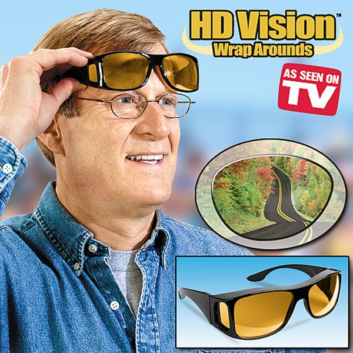
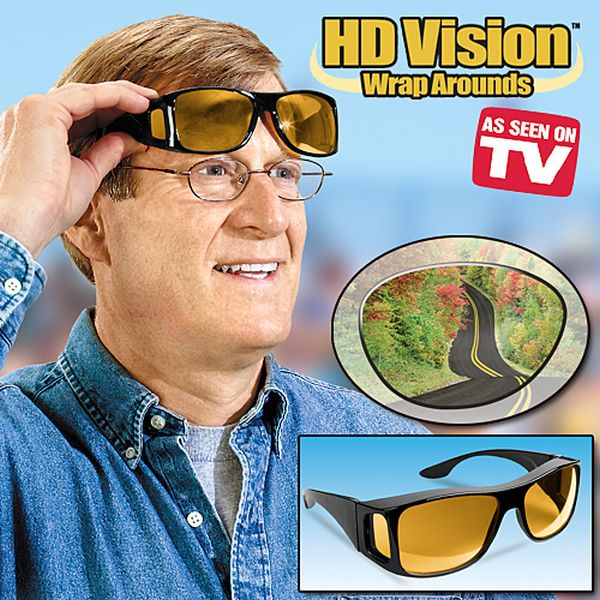

About Our Company
Fictional companies are often used in film, television, video games, books and comics where copyright or the likely chance of being prosecuted exists from using the name of a real company. They may be used on television in countries where the use of real company names or trademarks is prohibited in dramatic presentations to avoid the possibility of product placement. An example of a generic fictional company is the Acme Corporation. Often, when a fictional company is used, it will be a parody of a real world counterpart, which would avoid any unwanted legal issues.[1][2] In other cases, fictional brands have been carried across multiple series and even from movies to TV. Oceanic Airlines first appeared in the 1996 movie Executive Decision and has been seen in multiple series and films, including its high-profile place in Lost.

 
